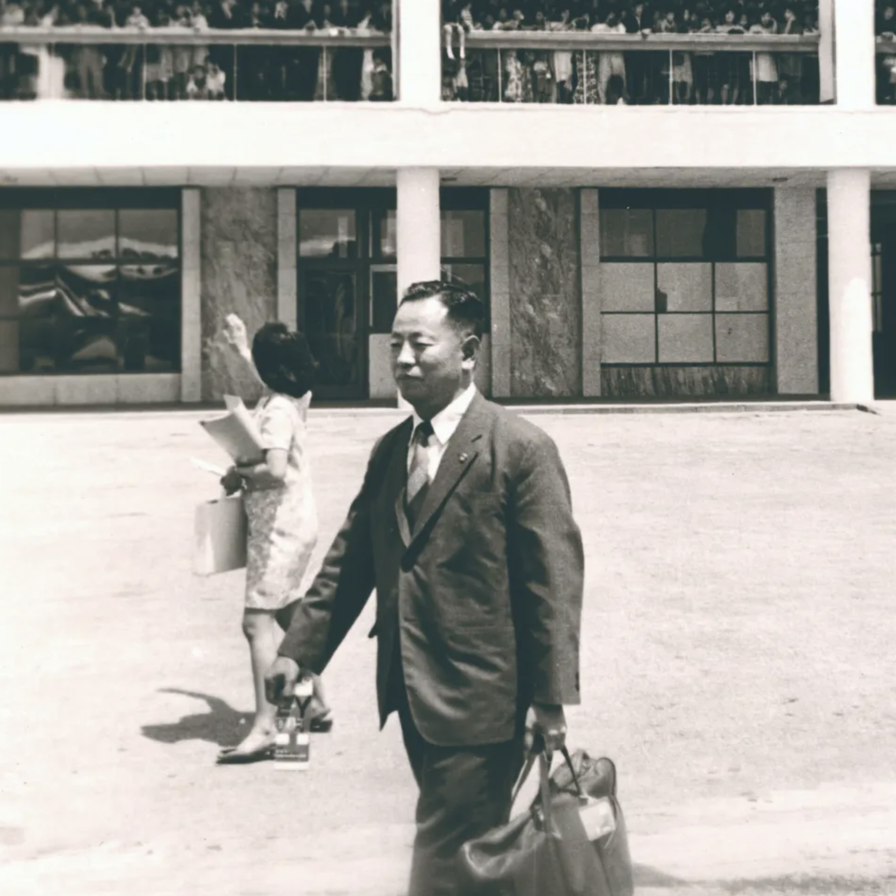
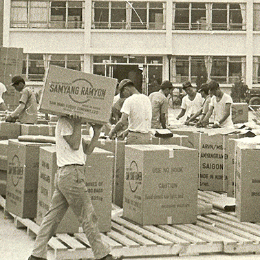
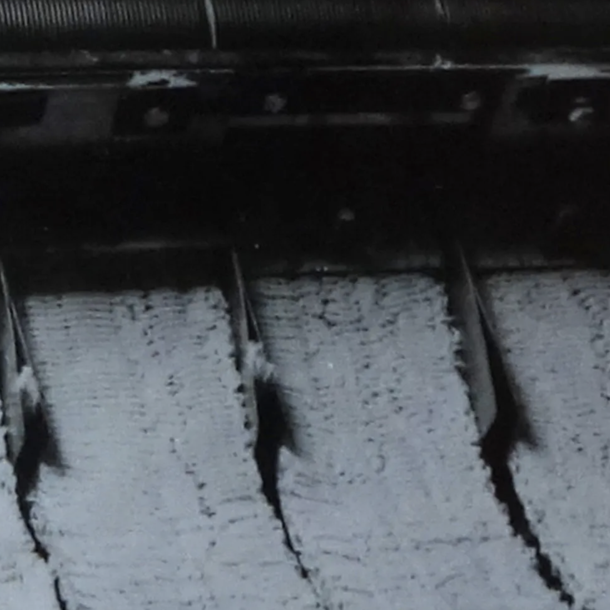
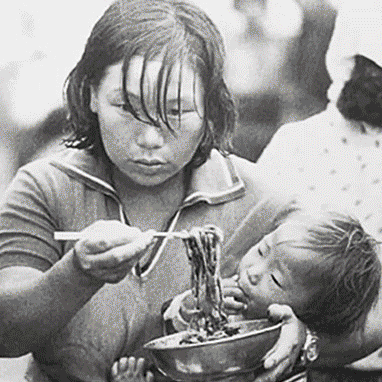
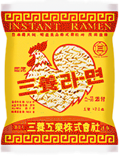
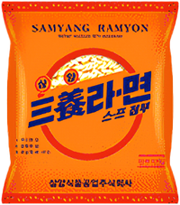
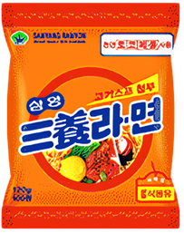
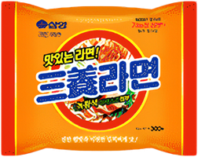
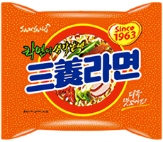
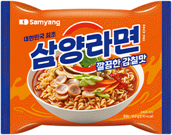

삼양라면
브랜드 소개
라면의 원조, 삼양라면은 기본에 충실한 삼양의 대표 브랜드입니다.
Brand Story
대한민국에 처음으로 라면을 선보이다.지금이야 가벼운 한 끼 식사로 라면을 먹지만 1963년 삼양라면이 처음 선을 보일 때만 해도 국내는 아직까지 배고픔에 허덕이는 사람이 많을 때였습니다.
삼양식품의 창업주인 전중윤 회장은 60년대 초 우연히 남대문 시장을 지나가다 사람들이 한 그릇에 5원하는 꿀꿀이 죽을 사먹기 위해 길게 줄을 선 것을 보고
서민들의 배고픔을 해결해야겠다고 결심하였습니다.
6.25 전쟁으로 황폐하고 식량은 부족한 시기에, 고 전중윤 명예회장은 남대문 시장에서 5원짜리 꿀꿀이죽을 먹기 위해
장사진을 친 배고픈 국민들을 목격하고
국내 식량 문제를 해결하고자 1963년 9월 15일.
우리나라 최초의 라면 ‘삼양라면'을 개발하였습니다.
당시 삼양라면의 가격은 10원으로, 저렴한 가격임에도 국민의 배를 든든하게 채워주었습니다.
-

↑ 제면기를 도입하기 위해
일본으로 떠나는 전중윤 사장 -

↑ 삼양라면 베트남 수출
-

↑ 1963년 전후의 제면기 모습
- 
1963년 우리나라 최초로 출시돼 지금까지 함께 해온 ‘삼양라면'은 변화하는 시대의 흐름에 맞춰 꾸준히 그 맛을 진화시켜왔습니다.
닭고기 국물 베이스의 라면에서 시작해 표고버섯, 소고기, 햄 등 다채로운 재료로 진하고도 깊은 국물맛을 선보였으며,
한국인의 입맛을 겨냥해 고춧가루, 마늘 등을 첨가하여 얼큰한 맛을 더해 남녀노소 좋아하는 라면을 선보여왔습니다.
이러한 삼양라면은 이제 대한민국을 넘어 해외에서도 사랑을 받고 있습니다.
최초에 머무르지 않고 더 나아가 최고의 맛을 향한 노력 삼양라면이 오랜 시간 사랑 받아올 수 있었던 비법입니다.
History
시대에 따라 달라진 포장지의 변천사1963년 우리나라 최초로 출시되어 지금까지 함께 해온 ‘삼양라면'의 포장지는
당시 닭 그림을 형상화한 디자인에서 1970년대 초반부터
현재와 같은 패턴인 주황색 바탕에 빨강색 원 형태로 교체되었습니다.
삼양라면만의 고유한 이미지를 유지하면서 동시에 현대적인 감각을 전하기 위해 꾸준히 새단장 해왔습니다.
-

1963년
-

1969년
-

1986년
-

1994년
-

2016년
-

2023년